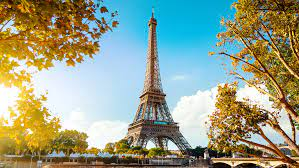

Over the past decade, I have moved around quite a bit. I have lived in multiple cities across 5 different states and so each time I had an opportunity to go on vacation from work, it was almost always spent visiting family back "home". Before I knew it, my last vacation had been in 2012. That right. 10 whole years ago! Now that it's 2022, I'd very much like to say I'm long overdue. Here are a list of places I dream of visiting in the, hopefully very near, future.
Santorini, Greece
From the stunning crisp-white buildings, the crystal-blue sea, to the tales of delicious cuisines that make up Santorini, Greece, this archipelago is at the top of my list of places to visit. It looks so romantic and would definitely be an experience of a lifetime.
Paris, France
Next up, Paris. While most people visit here for its iconic attractions such as the Eiffel Tower or it's trendy fashion districts, I would like to visit Paris for the food. Mainly one food in particular.
Occasionally, after learning my name is Kenelle, someone will bring to my attention that there is a french dish pronounced the same yet spelled with a Q. It has always been a dream of mine to visit the place that holds a dish I share a name with!
Tokyo, Japan
Tokyo is at the top of my list of places to visit because growing up my parents house was filled with Japanese decor and items from Japanese culture. Right before I was born, my parents had recently moved back to the US after living in Japan for 3 years. Growing up, my mom exposed us to lots Japanese cuisine she learned to cook and taught us some phrases in the language so their experience there genuinely peaked my interest very much. I would love to visit one day and retrace their footsteps.
Honolulu, Hawaii

After living in Portland, Oregon for 7 years, it wasn't long before I realized that vacationing in Hawaii was a normal and frequent thing to do for west coasters. Growing up on the east coast, it wasn't as popular for us with it being further away. Unfortunately with all the time I spent living on the west coast, I still never got to visit Hawaii. I hope that will one day change.
Houston, Texas
Last but not least, Houston, Texas. My favorite cuisine of all is Mexican food. I would love nothing more to visit the south and experience the fusion of TEX-MEX.